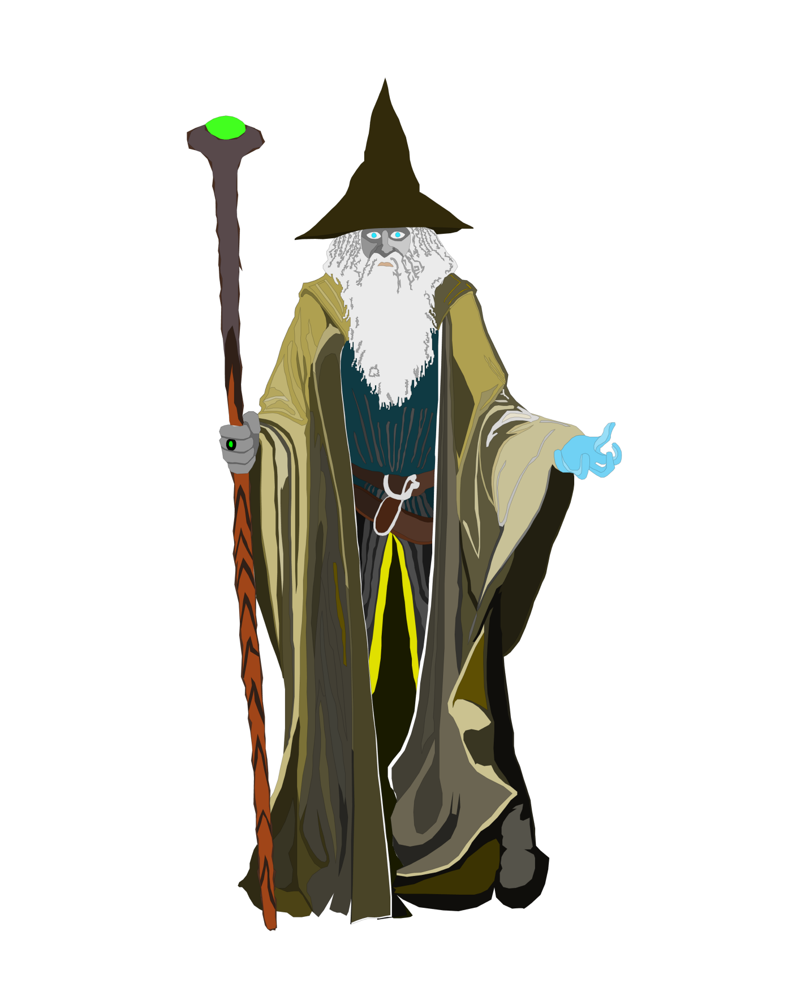

♛ History ♛
There lived a village at the foot of a river in a beautiful forest.
The villagers lived on their earnings from hard work, but they always wanted to spend more.
To be the best in the class and work hard was taught to the children.
The adult were all members of the middle class but always wanted more than they had.
The parents were very limited in their mindset, cause they were never taught anything else.
As soon as someone in the village became successful, which rarely happened, everyone stared at the successful person with huge eyes and complained about how lucky he was. They called him greedy and heartless in front of their children and so they learned what their parents had already learned.
People were hard working and had to work every day for the people on the other side. What other side, they wondered?
On the other side of the river lived a city. It was covered with huge towers and big offices, wealthy families and magnificent nature in harmony. They were the opposite of the villagers, but not because they earned more, drove more expensive cars or had a better location.
They lived better and more carefree lives because they had a different mindest. It was a completely different feeling to be a member of the other side. As soon as you passed through the entrance to the city, you felt positive thinking, a different way of looking at things and a slight touch tingling in the stomach.
But the two sides were anything but not friends. In the village, people always talked about the wealthy and arrogant people on the other side. In the village, however, they always talked about their problems by their own and tried to solve them by their own.
The freethinkers, however, reacted differently to such situations, because they also had problems. The freethinkers had a tradition every week from Saturday to Sunday. In a magnificent house, it was a tradition and highly secret. They solved their problems by talking about them in this ceremony and coming forward. Everybody helped everybody and they solved their problems with sensual ways, which are, high secretly.
The mindset among the freethinkers was fundamentally different, the children were taken everywhere and filled with positivity. They were taught not to complain, but to take matters into their own hands.
What is important to understand is that the freethinkers started exactly the same, both had the same conditions but the mindset was different. If a child of the freethinkers said "one day I will be mayor" he was encouraged to do it. He was helped and told as long as you don't give up, you will achieve it, because it is one of those impossible things to stop someone who is focused and never gives up. But one day, when the villagers' child heard that his friend wanted to be mayor one day, he wanted too.
Full of expectation, courage and self-confidence, he ran to his parents to deliver the new message.
In a few seconds he lost it all, they told him it was time to wake up and to look life in the eye. After all, it is not a concert of wishes and you cannot choose what you are made for and what you are not made for.
The day came and a very powerful man, who was a wizard, appeared in the village. He was supposed to be on the other side, because he was invited to show magic to a child. But it was his first time in the area and he had to witness the kind of how these people started their day.
One day he took heart and shouted out, "Stop living like this, this is no life, if you go on like this you will soon be punished for it." He was beside himself and very angry.
Clouds were gathering over the village and the wizard poured out so much rage in the form of energy that he was struck by the thunder. He freezed for seconds and a higher power spoke through him to the village. "Stop thinking like that, the spirit in each of you has gone to sleep. I hoped all these years that one day you would wake it up, but now I do." A rainbow like cloud gathered over the village and poured purple rain. The higher power spoke again "Now the rain will fill your minds with testo."
The village was freezed for seconds and felt this tingling touch in the stomach, but now it was like energy floating through bones and veins. The villagers suddenly saw the world with new eyes and their lives changed. In just a few months, town and village lived in harmony and negativity was banished forever. The old ways of thinking and habits were cast out of their lives and a sensual life now reigned in the whole area.
♛ The Testos were born and united. ♛